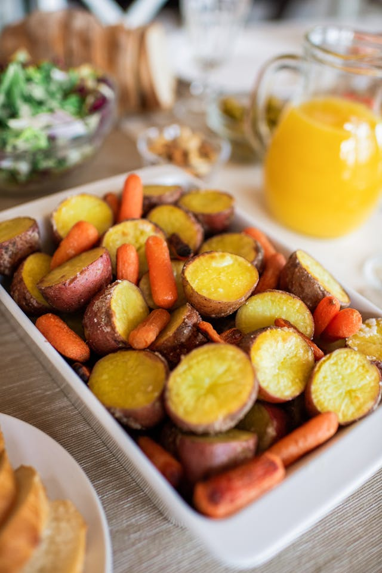

Patatas / tipos de patatas
Pons, jun 16, 2024

Las patatas son un alimento versátil y delicioso. Aquí tienes algunos tipos comunes de patatas:
-Monalisa
-Agria
-Kennebec o gallega
-Spunta
-Red Pontiac
-Universa
-Elodie
-Vitelotte